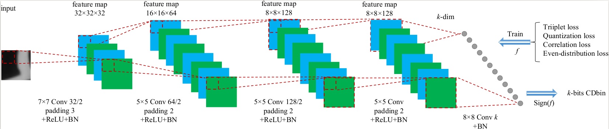
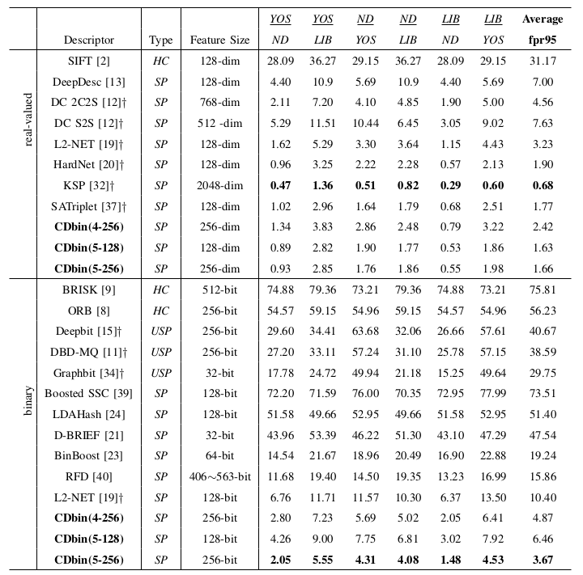
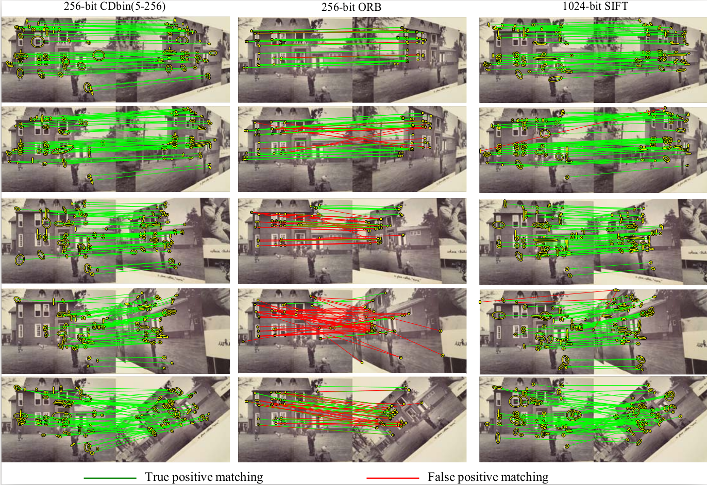

In this project page, we mainly introduce CDbin.
Description to CDbin
Abstract
V1 As an important computer vision task, image matching requires efficient and discriminative local descriptors. Most of existing descriptors like SIFT and ORB are hand-crafted. It is necessary to study more optimized descriptors through end-to-end learning. This paper proposes compact binary descriptors learned with a lightweight Convolutional Neural Network (CNN), which is efficient for training and testing. Specifically, we propose a CNN with no larger than five layers for descriptor learning. The resulting descriptors, i.e., Compact Discriminative binary descriptors (CDbin) are optimized with four complementary loss functions, i.e.,
1) triplet loss to ensure the discriminative power,
2) quantization loss to decrease the quantization error,
3) correlation loss to ensure the feature compactness,
4) even-distribution loss to enrich the embedded information.
Extensive experiments on two image patch datasets and three image retrieval datasets show that CDbin exhibits competitive performance compared with existing descriptors. For example, 64-bit CDbin substantially outperforms 256-bit ORB and 1024-bit SIFT on Hpatches dataset. Although generated by a shallow CNN, CDbin also outperforms several recent deep descriptors.

Comparison of fpr95 with other descriptors on Brown dataset. In each column, dataset name with underline denotes the training set, the other one denotes the testing set. And test of Liberty(LIB), Notredame(ND), Yosemite(YOS) denotes supervised methods, all the combinations of the trian are shown. † denotes using deeper CNNs than ours. SP denotes supervised methods, USP denotes unsupervised methods and HC denotes hand-crafted methods.

Sample image matching results on HPatches dataset. CDbin(5-256) and SIFT use MSER as keypoint detector. ORB use Harris detector.

Citation